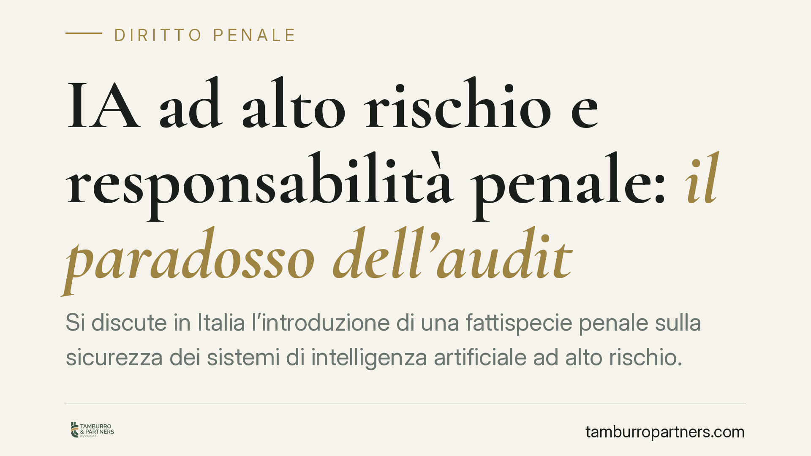

IA ad alto rischio e responsabilità penale: il paradosso dell'audit
Si discute in Italia l'introduzione di una fattispecie penale sulla sicurezza dei sistemi di intelligenza artificiale ad alto rischio. Le fonti divulgative anticipano pene severe e responsabilità degli enti. Prima di allarmarsi conviene distinguere ciò che è certo da ciò che è ancora in discussione, e capire perché gli audit interni possono diventare un'arma a doppio taglio.

Di cosa stiamo parlando
Nelle scorse settimane alcune fonti divulgative hanno riferito di un progetto normativo volto a introdurre una nuova figura di reato in materia di intelligenza artificiale, con particolare riguardo ai sistemi cosiddetti *ad alto rischio* secondo la classificazione europea.
Premessa doverosa: allo stato non risulta pubblicata in Gazzetta Ufficiale una norma penale ad hoc con i numeri e le date che circolano. Riferimenti a un decreto legislativo già vigente o a una data certa di entrata in vigore vanno quindi trattati con cautela. Parliamo di uno schema in discussione, non di diritto positivo consolidato. Chi gestisce l'impresa deve monitorare la Gazzetta Ufficiale prima di assumere qualunque affermazione come definitiva.
Il perimetro europeo: il dato certo
L'unico riferimento oggi solido è il Regolamento (UE) 2024/1689 (cosiddetto *AI Act*), direttamente applicabile e con un calendario di operatività scaglionato. Il regolamento individua i sistemi ad alto rischio e impone precisi obblighi ai diversi operatori della catena: fornitori, produttori, importatori, distributori e utilizzatori professionali.
Tra questi obblighi rileva la sorveglianza umana (*human oversight*: la presenza di persone in grado di comprendere, controllare e, se necessario, disattivare il sistema). L'AI Act, però, non è una norma penale: fissa obblighi e prevede sanzioni amministrative. Un'eventuale rilevanza penale deriverebbe da fonti interne, ancora in fase di definizione.
Il quadro penale vigente da non confondere
È importante non sovrapporre lo scenario futuro con ciò che già esiste. L'art. 437 c.p. (rimozione od omissione dolosa di cautele contro infortuni sul lavoro) punisce chi omette di collocare o rimuove impianti e apparecchi destinati a prevenire disastri o infortuni. La pena base è sensibilmente inferiore a quella riportata da alcune anticipazioni giornalistiche; aumenta solo in presenza di un evento dannoso.
Questa norma può già oggi intercettare condotte legate a sistemi automatizzati che incidono sulla sicurezza del lavoro. Attenzione, quindi: il tema non è tutto "futuro". Parte del rischio penale è già presente attraverso le fattispecie esistenti in materia di sicurezza e di responsabilità colposa.
Il paradosso dell'audit
Veniamo al nodo più delicato. Un'impresa che introduce sistemi di IA in ambito produttivo o organizzativo è indotta a svolgere *audit* interni per verificarne l'affidabilità e la sicurezza. È buona prassi e, in molti casi, un obbligo.
Il paradosso è questo: un audit che segnala una criticità genera un documento datato. Se la criticità non viene rimossa e in seguito si verifica un danno, quel documento dimostra che l'impresa conosceva il rischio. In sede penale la consapevolezza pesa: distingue la colpa dal dolo eventuale e incide sulla posizione di garanzia dei vertici.
Da qui una tentazione pericolosa, che va respinta con nettezza: non documentare mai è la scelta peggiore, non la migliore. L'assenza di controlli non protegge; espone a una contestazione ancora più grave, quella di aver omesso ogni verifica. La risposta corretta non è tacere il rischio, ma rilevarlo e rimuoverlo tempestivamente, lasciando traccia sia della segnalazione sia dell'intervento correttivo.
Chi risponde lungo la catena
La posizione di garanzia non è concentrata in un solo soggetto. Il fornitore risponde della conformità del sistema; il datore di lavoro e i dirigenti rispondono dell'uso concreto e della sorveglianza; chi detiene i poteri di spesa risponde della mancata allocazione delle risorse necessarie a mettere in sicurezza il sistema. Una delega di funzioni chiara, con autonomia decisionale e budget effettivo, resta lo strumento cardine per definire le responsabilità.
Cosa fare in concreto
- Verificare la classificazione dei sistemi di IA utilizzati secondo l'AI Act: alto rischio o no cambia tutto.
- Programmare audit periodici e, per ogni criticità rilevata, aprire subito un piano di rimedio tracciato con tempi e responsabili: la tutela nasce da audit *più* correzione documentata, mai dall'assenza di controlli.
- Aggiornare la delega di funzioni e i poteri di spesa, così da rendere effettiva la sorveglianza umana su ciascun sistema.
- Rivedere il modello organizzativo 231, integrando i presidi sui rischi da IA in vista di possibili estensioni normative.
- Monitorare la Gazzetta Ufficiale e le fonti istituzionali: qualunque decisione operativa va tarata sul testo effettivamente pubblicato, non sulle anticipazioni.
Conclusione
Lo scenario penale sull'IA è in movimento, ma non parte da zero: obblighi europei e reati in materia di sicurezza già disegnano un perimetro di responsabilità. La strada difendibile passa da controlli seri e correzioni tempestive, non dal silenzio.
Contributo informativo a cura di Tamburro & Partners - Avv. Giuseppe Tamburro. Non costituisce parere legale.
Ogni condominio ha una storia a sé.
Se gestisci un'amministrazione e vuoi un confronto su una specifica questione condominiale, scrivi allo studio. Ti rispondiamo entro un giorno lavorativo.